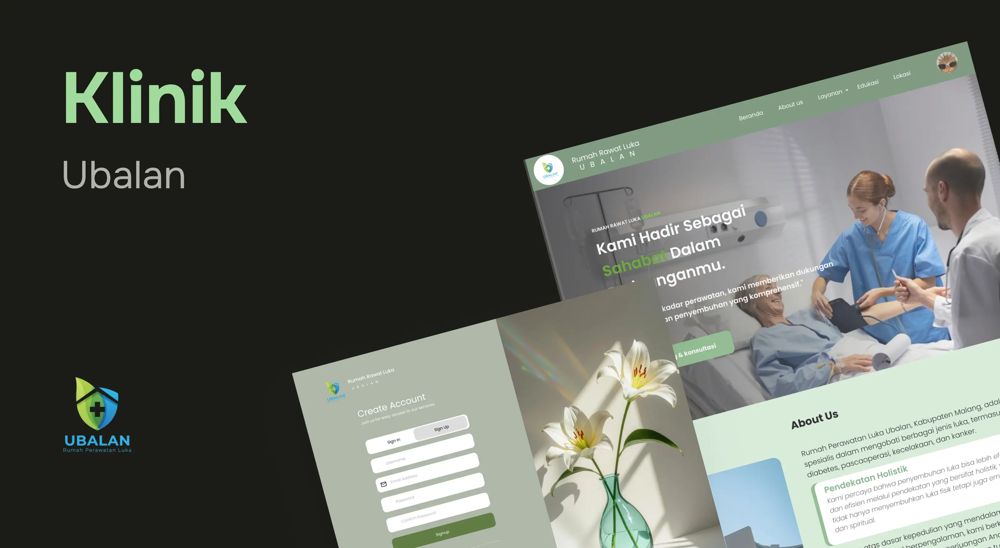
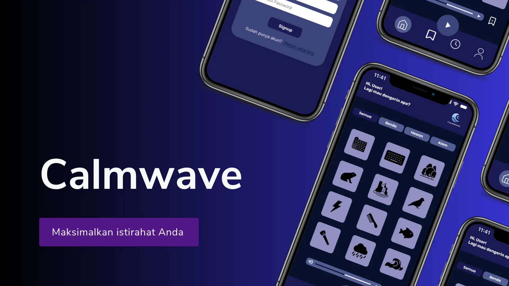
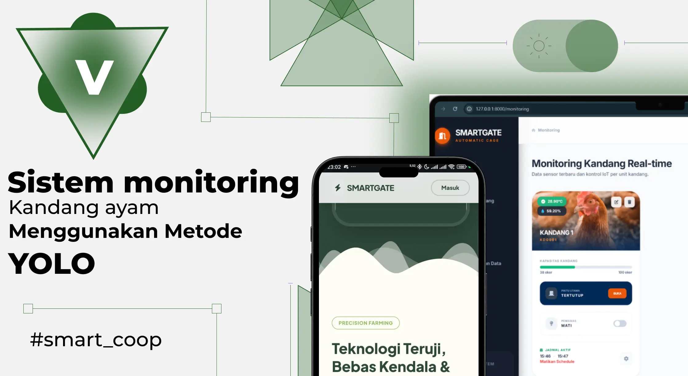

Hello, I'm Singgih
Information Technology student focused on web application development, Internet of Things (IoT), and AI integration to build functional and impactful digital solutions.
Download CVI am an Information Technology student focused on web development, IoT, and AI. I am passionate about building innovative digital solutions, ranging from web applications to intelligent sensor-based systems. For me, technology is not just about writing code, but also about creating solutions that provide real value to users.
Academic Semester
Completed Projects
Focused on developing technology solutions and creative work through web development, IoT, artificial intelligence, and visual design.
Building responsive, interactive, and user-friendly websites and web applications.
Developing monitoring and automation systems using sensors and microcontrollers.
Exploring and applying AI for data analysis, computer vision, and intelligent systems.
Creating digital illustrations, visual designs, and animations to enhance user experiences.
Teknologi, framework, dan tools yang saya gunakan dalam pengembangan web, IoT, AI, dan desain digital.
Explore innovative digital solutions that combine modern design aesthetics with functional systems.

Development of a modern wound care clinic web application. Features an interactive responsive landing page, patient location map integration, and a secure login management system.

A smart audio relaxation application that allows users to mix various nature sounds to create a comfortable environment for work and sleep.

An automated farming system using ESP32 to monitor temperature, humidity levels, and calculate the total livestock population in real-time.